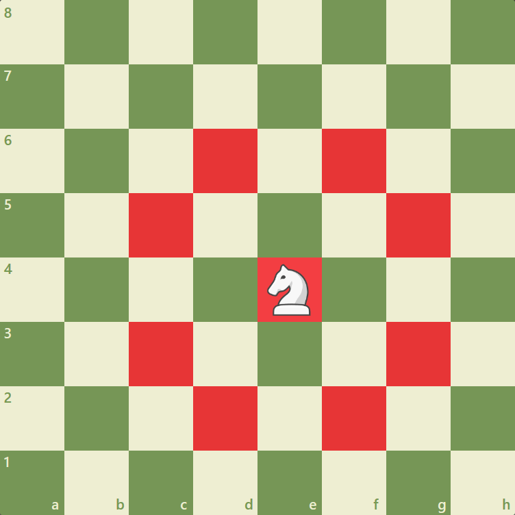
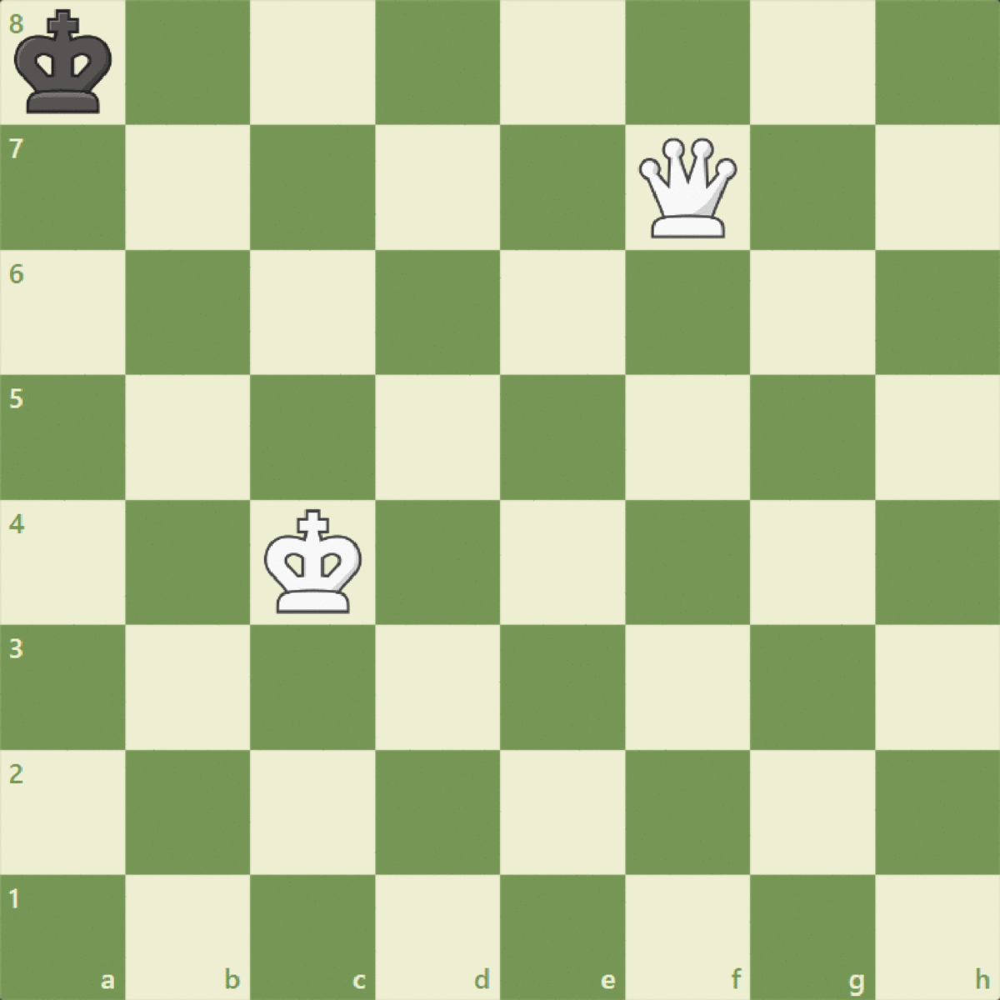

How to play Chess
A Simple Guide for Beginners
How to Play Chess
The goal of Chess is to checkmate your opponent's king - this means the king is in a position to be captured ("in check") and cannot escape from capture.
2. Setup
- The board has 64 squares (8x8) alternating between light and dark colors.
- Each player starts with 16 pieces: 1 King, 1 Queen, 2 Rooks, 2 Bishops, 2 Knights, and 8 Pawns.
- White pieces go on ranks 1–2 and black on ranks 7–8. Queens always start on their matching color.
3. How the Pieces Move
-
King: One square in any direction.
-
Queen: Any number of squares in any direction.
-
Rook: Horizontally or vertically.
-
Bishop: Diagonally.
-
Knight: L-shape (2+1 moves).
 -
Pawn: Forward 1 square (or 2 on first move), captures diagonally.

4. Special Moves
-
Castling: Move king and rook at the same time under certain conditions.
-
En Passant: Special pawn capture.

-
Promotion: When a pawn reaches the last rank, it is promoted (usually to a queen).
5. Winning the Game
-
Checkmate: King is under attack and cannot escape.
-
Draw: Game ends with no winner (e.g., stalemate, insufficient material).
